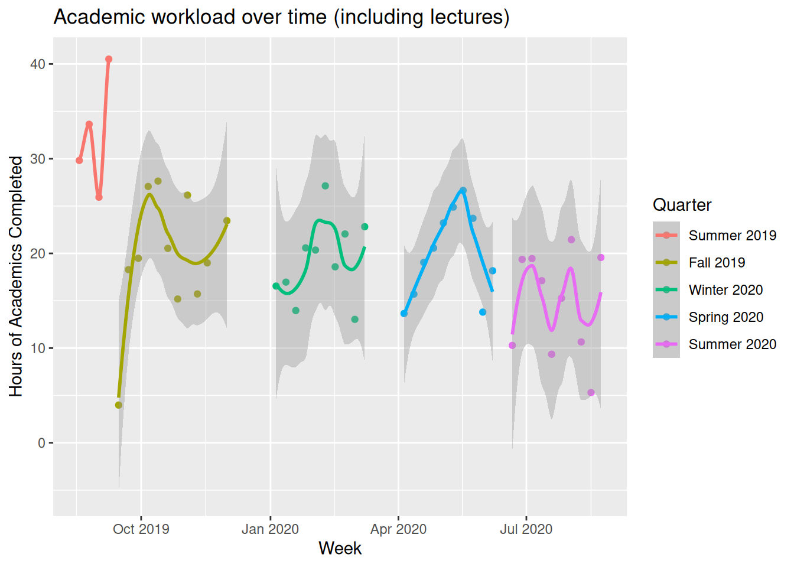
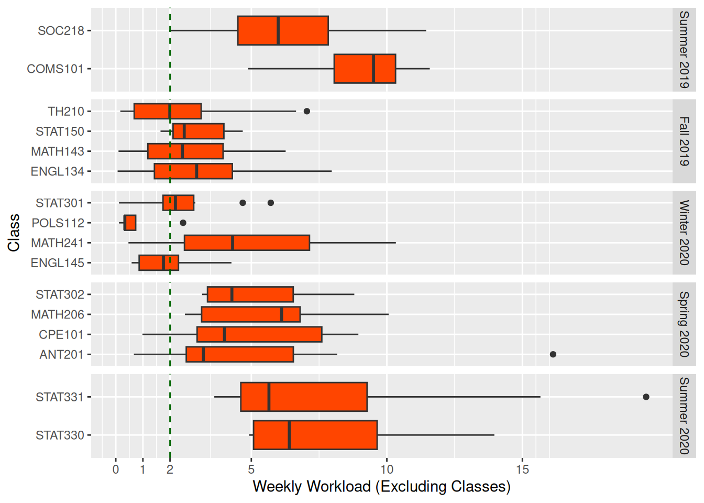

# Libraries
library(tidyverse)
library(stringr)
library(DT)
library(lubridate)
library(modelr)
library(widgetframe)
# Data
# Note: This data is slightly pre-cleaned so only relevant columns and classes are there, and to avoid excess personal information.
all_quarters <- c("Summer 2019", "Fall 2019", "Winter 2020", "Spring 2020", "Summer 2020")
online_quarters <- c("Spring 2020", "Summer 2020")
units <- c(8,14,16,16,8)
#Best to define these here, they'll matter later.
study_time <- read.csv("collegeFirstYear.csv") %>%
mutate(Completed = mdy(Completed))%>%
mutate(Assignment = ifelse(Title != "", str_trunc(Title, 45), str_c(Type, Tasks_Predicted, Units, sep = " "))) %>%
mutate(week_completed = Completed %>% floor_date(unit="week")) %>%
mutate(Quarter = factor(Quarter, levels = all_quarters)) %>%
mutate(quarter_units = factor(Quarter,
levels=all_quarters,
labels=units)) %>%
rename(Minutes = Min_Real) %>%
filter(Class != "GameDevClub")
widget <- DT::datatable(study_time %>% select(Completed,Class,Assignment,Minutes), rownames = FALSE)
widgetframe::frameWidget(widget, width='100%', height = '100%')Not all college slogans are the real inspirational type. Cal Poly happens to have a funnily direct one: Study 25-35 hours per week. At first while touring the school, it seems to be everywhere from posters on the wall to pins and magnets given out at orientation. 2 hours per week per unit, outside lecture, sounds like it’d add up to a whole lot. So, I’ve got to ask, does it match up with what students actually do?
As a bit of a spreadsheet nerd, I’ve found myself in a great position to dive into this question and see if I’ve lived up to the slogan myself. Ever since my second year of high school, consistently recording my time spent on academics in a spreadsheet has been an integral part of my work flow. Each assignment is added as a new row once it’s assigned, and I’ll do my best to describe it and estimate how long it’ll take to complete. This makes a dynamic to-do list where I can punch in and out, recording the time in helper columns. Once the assignment is done and I’ve recorded every minute spent on it, it’s filtered out of sight, clearing the list.
Now, let’s take a look at the most important parts of raw data, as that’s often the best way to understand what we’re working with. This includes every assignment and class over my first year of college. Feel free to explore the data with the interactive table below.
Next, we’ll aggregate these tasks and see how much work there was on a weekly basis.
workloads <- study_time %>%
group_by(week_completed, Quarter, quarter_units) %>%
filter("Class" %in% Type | Quarter %in% online_quarters) %>% #Only counting weeks where there were classes or the quarter was online.
summarize(week_workload = sum(Minutes, na.rm=TRUE)/60) %>%
ungroup() %>%
distinct(week_completed, .keep_all = TRUE)
workloads %>%
ggplot(aes(x=week_completed, y=week_workload, color=Quarter)) +
geom_point() +
geom_smooth() +
xlab("Week") +
ylab("Hours of Academics Completed") +
ggtitle("Academic workload over time (including lectures)")
#Mean is the statistic of choice because large projects can take a long time and end up with work from one week being counted in another.
conf_interval <- t.test(workloads$week_workload, mu=25, alternative = "less")
class_time_total <- study_time %>%
filter(Type=="Class") %>% pull(Minutes) %>% sum(na.rm=TRUE)
study_time_total <- study_time %>%
filter(Type!="Class") %>% pull(Minutes) %>% sum(na.rm=TRUE)
percent_in_class <- (class_time_total / (class_time_total + study_time_total))*100 %>% round(digits=1)Alas, I’ve only spent a mean of 19.7 hours per week, a good ways from 25, let alone 35. And that’s with classes included, which are 29% of that time. Apart from the intensive 4-week 8-unit 2019 summer session, there’s very little case to be made that I ended up having a typical 25-35 hour week, other than to consider the time spent traveling between classes, which, though quite time consuming, which is not included in my data, but could hardly be called studying.
conf_interval_per_unit <- t.test(workloads$week_workload/units, mu=2, alternative = "less")Another more charitable way to reconcile my schedule with the ideal would be to look at the per-unit time spent. It turns out that’s a more positive 1.7 hours, or the equivalent of 27.7 hours for a 16-unit schedule. This is still including classes but feels almost like victory nonetheless.
Next, let’s see which classes were the ones that never required super rigorous homework?
workloads_by_class <- study_time %>%
filter(Class != "General") %>% # Removing non class-specific academic imperatives
group_by(week_completed) %>%
filter("Class" %in% Type | Quarter %in% online_quarters) %>% #Only counting weeks where there were classes or the quarter was online.
ungroup() %>%
filter(Type != "Class") %>%
group_by(Class,week_completed, Quarter, quarter_units) %>%
summarize(week_workload = sum(Minutes, na.rm=TRUE)/60) %>%
ungroup() %>%
distinct(week_completed, Class, .keep_all = TRUE)
workloads_by_class %>%
ggplot(aes(y=Class,x=week_workload)) +
geom_boxplot(fill="orangered") +
xlab("Weekly Workload (Excluding Classes)") +
facet_grid(rows= vars(Quarter), scales = "free_y") +
geom_vline(xintercept =2, color="darkgreen", linetype = "dashed")+
scale_x_continuous(breaks=c(0,1,2,5,10,15))
The chart shows only three classes below the two hour line, which match my memories of the less rigorous yet still valuable courses. Note that of the outlier groups may be exaggerated because a project done slowly over many days only counts on the week when it’s completed, unless I’ve broken the project into multiple component tasks.
So, does Cal Poly require a full 25-35 hours a week of homework? Not for me at least. But I suppose the slogan “study 10-20 hours a week, whatever you’re feeling” would be far less inspiring. Also, I’m fairly certain architecture majors exceed 35 hours by at least a factor of two anyway.